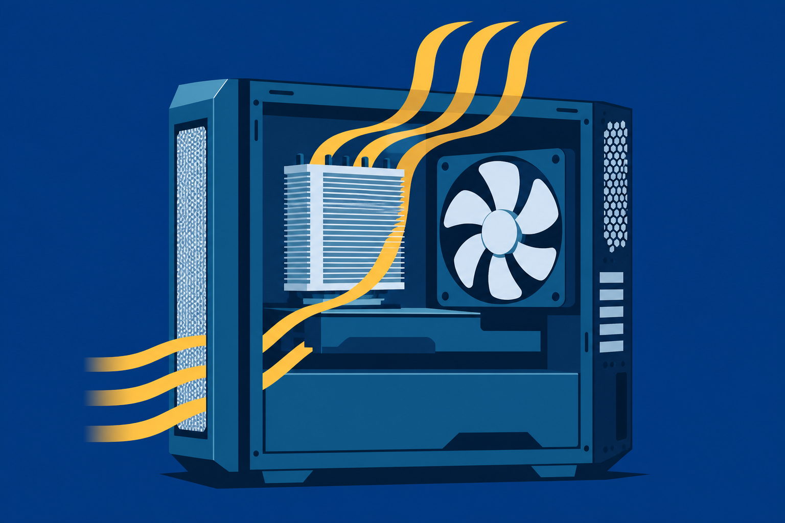
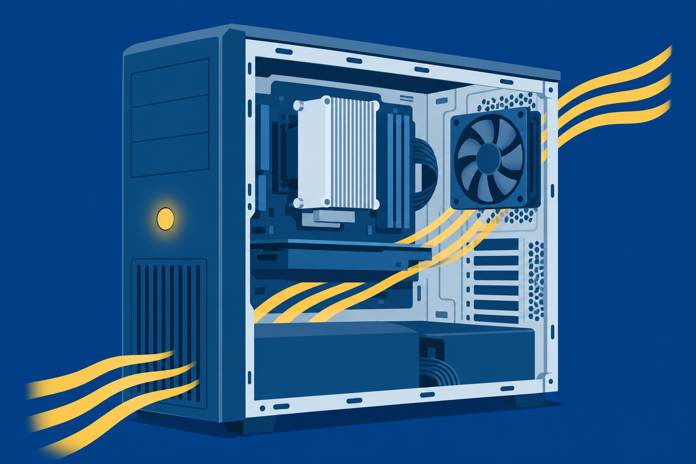

01
Size
a power supply from a wattage budget, with headroom to spare.

Power supplies, cooling, storage, memory, and CPUs: filling the board you seated in Chapter 2.
Start here: Put a hand behind a running PC. That warm breeze is the power budget leaving the box.
a power supply from a wattage budget, with headroom to spare.
storage and matched memory that fit the job and the slots.
a CPU to its socket and a cooling path to its heat.
The editing rig from Chapter 2 finally boots. Then its first big export dies halfway: black screen, fans down, no error at all.
Talk with a partner:
New parts, clean install, nothing on screen. What do you suspect first?
Chapter 2 left the A/V workstation with a bare board in the case. Today’s decisions fill the rest of the sheet.
One build carries the whole class.
120 or 240 V
Converts AC to DC
Check the voltage selector before first power-up. Auto-switching units read the outlet on their own.
One sample label. The +3.3 V and +5 V outputs share a combined ceiling, so modern builds lean on +12 V.
Commit first: The build sheet’s components draw 380 W at full load. Pick a supply and defend the number.
The board’s main feed
15-pin L to the drives
Legacy devices live on
Extra power on demand
Modular supplies detach the cables you skip: less clutter, better airflow. Servers run two hot-swappable units so one failure never stops the box.
Fans move air one way. Check the direction before you screw one in, or your exhaust becomes an intake.
Inspect the loop. Low coolant or a leak can overheat or short the system.
Judge a drive on reliability, performance, and use. The build takes one of each: fast system drive, roomy data drive.
Same slot, two speeds. Read the board’s documentation before you buy the stick.
2-drive minimum · faster than one drive
✕ One failure loses everything
2-drive minimum · half the usable space
✓ Survives one failed drive
Single parity, spread out. 3-drive minimum. Fast read, slower write.
✓ survives 1Double parity. 4-drive minimum. Less space, degraded with two down.
✓ survives 2A stripe of mirrors. 4-drive minimum, always an even count.
✓ 1 per mirrorD marks data, P marks parity. Parity is the math that rebuilds a dead drive’s blocks.
The constraint: The studio’s archive box has room for exactly two drives, and a failed drive must never take the projects with it. RAID 0, 1, or 5?
Tray stuck? A straightened paper clip in the pinhole ejects it, power or not.
Every generation is keyed differently. A DDR4 module never seats in a DDR5 slot, so the notch checks your work.
The manual names the slots. Servers add ECC RAM: extra bits that catch errors, matched to board and CPU, never mixed with non-ECC.
The Intel and AMD instruction set that started the family.
64-bit, and it runs 32-bit and 64-bit software alike.
Phones and tablets. A system-on-chip doing more work per watt.
AMD AM4 · TR4 · SP3
Intel LGA 1200 · LGA 1700
The board manual lists supported chips. Desktop lines ladder up: Core i3 to i9, Ryzen 3 to 9. Servers run Xeon and EPYC.
Every line traces back to a rule you can defend. That is the difference between shopping and specifying.
Next stop: first power-on.
The parts draw 300 W. What size supply do you defend, and with what math?
Two bays, and the data must survive a dead drive. Which RAID level, and why?
Where do the two matched DIMMs go, and what does that seating unlock?

Next step: Run the CertMaster labs: Install a Power Supply, Install SATA Devices, and Select Memory by Sight. Chapter 4 hits the power button and troubleshoots whatever fights back.